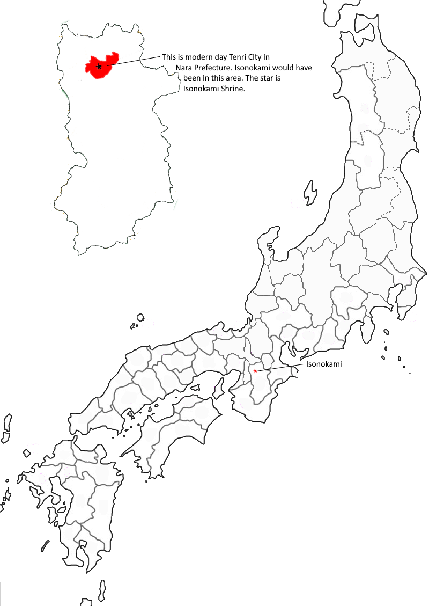

Poem #144 
いその神ふるき宮この郭公声ばかりこそむかしなりけれ
isonokami
furuki miyako no
hototogisu
koe bakari koso
mukashi narikere
furuki miyako no
hototogisu
koe bakari koso
mukashi narikere
The old capital
at Isonokami
is now a ruin.
Only the cuckoo's singing
is as it was long ago.
at Isonokami
is now a ruin.
Only the cuckoo's singing
is as it was long ago.

Background Information
There is a pun on Furu, a place in Isonokami,
and the adjective furushi ("old") (McCullough). Isonokami would be used for poems related to growing old or time passing.